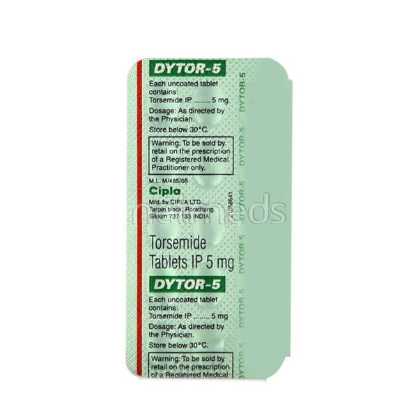

Dytor 5 mg
Dytor 5 MG Tablet treats edema that is, it reduces the presence of extra fluid that develops in the body as a result of health problems like kidney or liver disease and heart failure. Thus, the drug helps in the relief of related symptoms which may include swelling of the abdomen or hand and legs and problems with breathing. It also effectively treats hypertension, that is, high blood pressure. It is known to be a water pill, encouraging the body to create more urine so as to flush out the extra liquid and salts.
Subsitute:
Price: 44.5.Rs (2.97rs/strip)
15tab in one strip